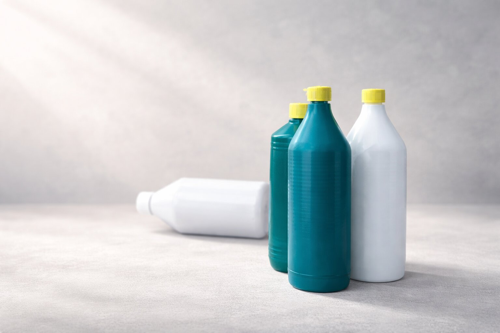

Bæredygtig håndtering af farligt affald
Vi omdanner kemisk affald til genanvendelige ressourcer. Miljøgodkendt, sikkert og økonomisk fornuftigt.

Cirkulær økonomi
Vi genanvender og behandler kemi ansvarligt
Bæredygtig Affaldshåndtering
Vi specialiserer os i håndtering af plastbeholdere med kemi – specifikt syrer og baser

Hos Dansk Kemisortering specialiserer vi os i håndteringen af plastbeholdere med kemi – specifikt syrer og baser. Disse beholdere indsamles fra private forbrugere, der har sorteret dem som farligt affald, hvorefter de på genbrugspladserne pakkes i spændelåsfade med vermiculit.

I dagens Danmark er standardproceduren at brænde det farlige affald – inklusive spændelåsfade med indhold. Selvom det er en effektiv måde at minimere risikoen for miljø- og sundhedsskader, er det ikke den mest bæredygtige løsning.

Vores mål, hos Dansk Kemisortering, er at ændre denne praksis inden for affaldshåndtering af farligt affald ved at introducere og implementere bæredygtige alternativer. Vi tror på genbrug og genanvendelse af materialer, hvor det er muligt.
Sådan arbejder vi
Det er egentlig ganske enkelt – vi modtager en samlet pakke fra genbrugsstationer og deler den ud i forskellige fraktioner.

Modtagelse
Spændelåsfade med beholdere pakket i vermiculite

Genbrug
Emballage sorteres til genbrug

Behandling
Syrer og baser til specialbehandling

Destruktion
Granulat til sikker destruktion
Kontakt os for UN-godkendte spændelåsfade og vermiculite
Hvorfor vælge os?
Sikkerhed og miljøgodkendelse
Vores processer er miljøgodkendte med høj sikkerhedsprioritering. Vi behandler syre- og base-beholdere separat med grundig rengøring imellem.
Cirkulær økonomi
Vi arbejder aktivt på at minimere affald og genbruge materialer. Løbende tests undersøger genanvendelsesmuligheder for plastgranulat.
Konkurencedygtigt alternativ
Et bæredygtigt og økonomisk alternativ til traditionel afbrænding af farligt affald.
Vores mission er at gøre affaldshåndtering sikker, effektiv og miljøvenlig. Ved at vælge os bidrager du til en grønnere fremtid.
Kontakt os
Vi er klar til at hjælpe
Vi svarer typisk inden for 24 timer